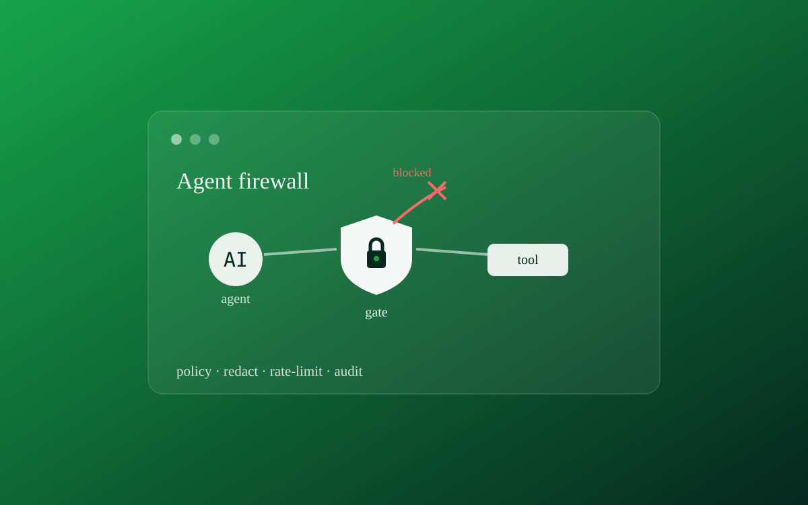
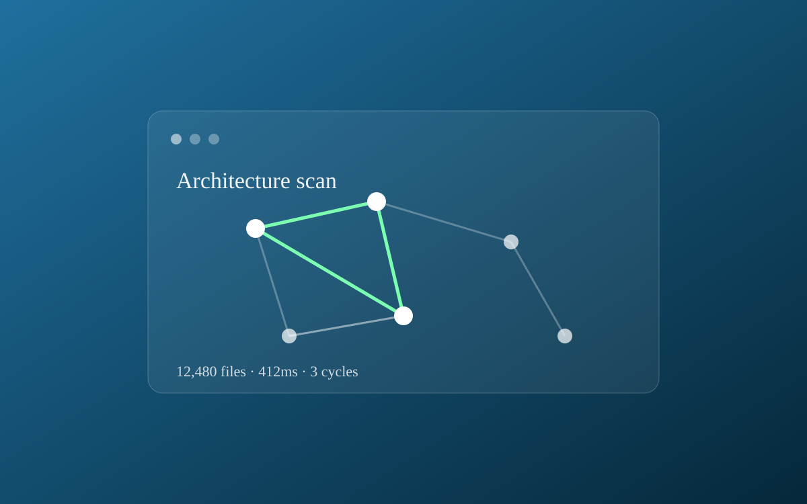
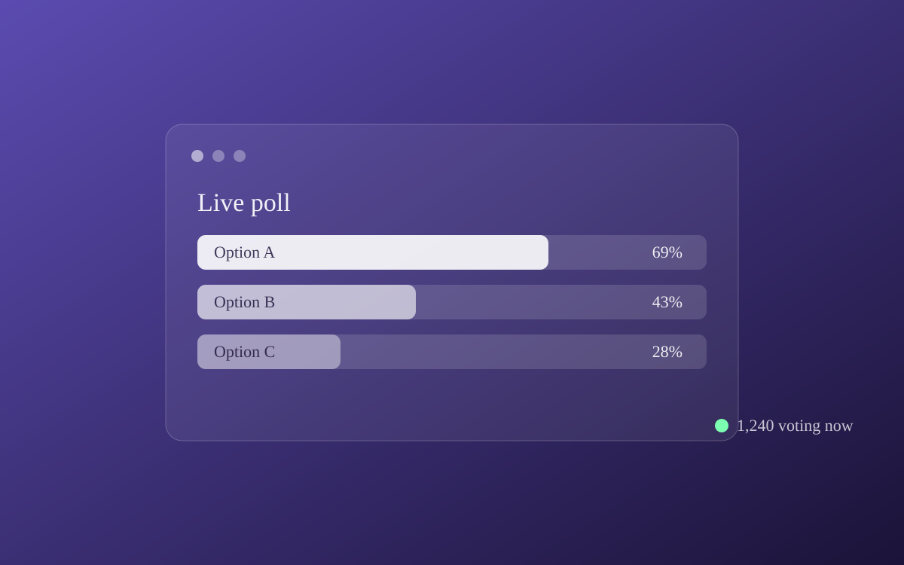
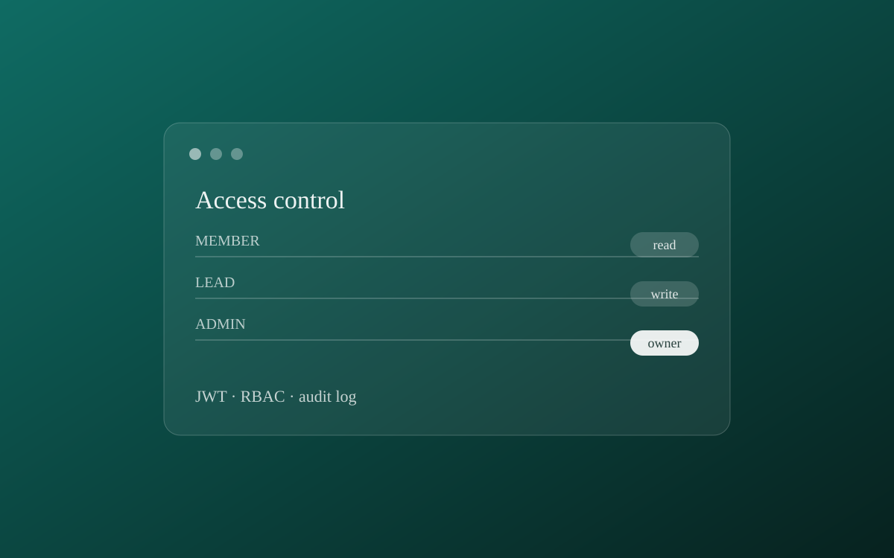
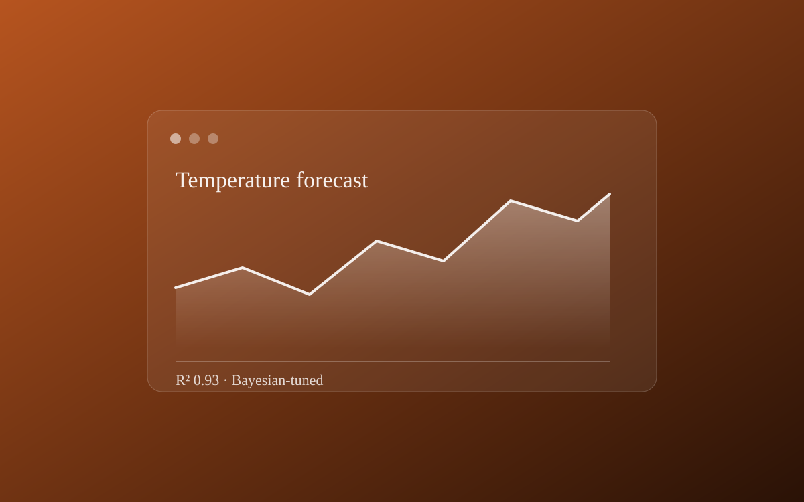

Gunjit Kumar Dhakar
Backend & full-stack developer | Golang, Python, Kafka
I am a Backend Systems Engineer graduated from IIT BHU Varanasi. My focus is on engineering concurrent log ingestion engines, fault-tolerant event streams, and real-time APIs. I build high-performance pipelines in Go, optimize databases, and solve algorithmic challenges.
Featured Work
Software Engineer
Cyclosec // Remote
Golang
Apache Kafka
FastAPI
Socket.IO
Grafana
pprof
- Architected a concurrent Golang log ingestion agent – utilizing Goroutines, Channels, and
pprofprofiling – processing 50,000+ events/hour with zero data loss and 95% latency reduction. - Engineered a fault-tolerant Golang-to-Kafka pipeline with exponential backoff retries and disk queue backpressure.
- Designed a FastAPI backend with Socket.IO push for real-time anomaly detection, migrating legacy polling endpoints to reduce live data latency.
- Set up Grafana dashboards to monitor Kafka consumer lag, network rates, and system resources.
Education
Indian Institute of Technology (IIT) BHU, Varanasi
Bachelor of Technology (B.Tech) | CGPA: 8.60 / 10.00
Selected Projects




Climate Modeling
2025Two-step ML downscaling pipeline hitting 0.93 R² in temperature forecasting with Bayesian-tuned models.
Technical Notes
Now
- Learning: Kafka Streams, System Design, Advanced Golang
- Looking for: Backend engineering roles (remote / Gurugram / Bengaluru / Hyderabad)
Skills
Backend
Golang
Python
FastAPI
Node.js
Kafka
PostgreSQL
MongoDB
Redis
REST APIs
JWT Auth
Frontend
React
Next.js
DevOps & Tools
Docker
Git & GitHub
Linux
System Design
DSA Foundations
Want to work together?
I'm actively seeking backend or full-stack engineering roles – open to remote, Gurugram, Bengaluru, or Hyderabad. If you're building scalable systems with Go, Python, or Kafka, let's talk.